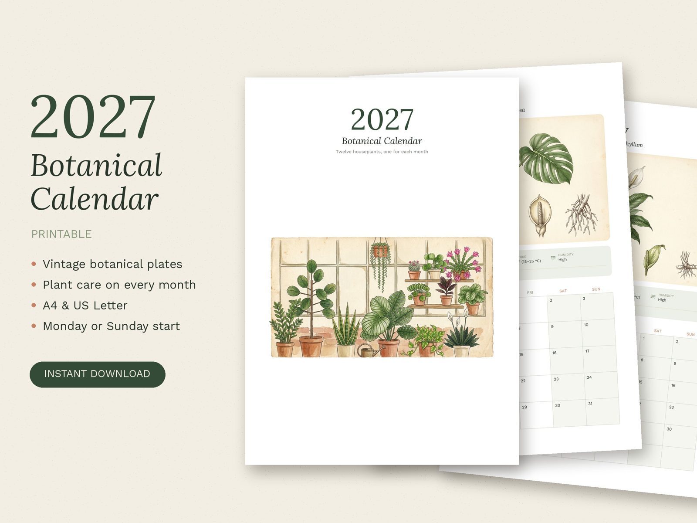

Un peu de verdure pour chaque mois de 2027. Ce calendrier à imprimer réunit 12 planches botaniques de style ancien, à l'aquarelle et à l'encre, dans la tradition de l'illustration scientifique du XIXᵉ siècle. Chaque mois vous donne aussi l'essentiel pour que la plante se porte bien.
Les 12 plantes
- JanvierMonstera
- FévrierPothos
- MarsSansevieria
- AvrilFiguier lyre
- MaiFleur de lune
- JuinCactus
- JuilletCalathea
- AoûtPlante chapelet
- SeptembreZamioculcas
- OctobreCaoutchouc
- NovembrePilea
- DécembreCactus de Noël
Chaque mois
- Une planche botanique pleine largeur : la plante et ses détails (feuilles, fleurs, racines…)
- L'entretien en un coup d'œil : lumière, arrosage, température, humidité
- Une astuce du mois
- Une grande grille avec les week-ends mis en valeur
Ce que vous recevez
- 5 fichiers PDF de 13 pages (couverture + 12 mois)
- Version française, A4, semaine commençant le lundi
- Versions anglaises en A4 et US Letter, semaine commençant le lundi ou le dimanche
Impression
- À imprimer chez vous ou en reprographie
- Idéalement sur papier mat épais (160 à 250 g), en « taille réelle »
- À accrocher avec une pince, sur un porte-bloc, ou à relier
À propos
Les planches botaniques ont été créées avec l'aide d'outils d'IA, puis sélectionnées, retouchées et mises en page par mes soins. Les conseils d'entretien et la conception du calendrier sont mon travail.